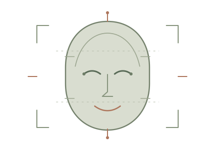

Programming & Web
Python · Java · JavaScript · SQL · HTML5 · CSS3 · Shell scripting
AI / ML · GENERATIVE AI · PYTHON
I’m Vansh, a developer focused on building practical software with machine learning, language models and data.
01 / ABOUT
I’m Vansh, a developer focused on building practical software with machine learning, language models and data.
I work across the software stack, from data preparation and machine learning to backend services, web applications and automation. My recent focus includes Generative AI, retrieval-augmented generation, embeddings, vector search and multi-agent systems.
I enjoy solving practical problems, learning new tools and turning technical ideas into usable products. I’m particularly interested in applied AI, Python development, data analytics and thoughtful product engineering.
02 / TOOLKIT
A growing set of technologies I’ve used in coursework, experiments and projects.
Python · Java · JavaScript · SQL · HTML5 · CSS3 · Shell scripting
Scikit-learn · PyTorch · TensorFlow · Pandas · NumPy · Matplotlib · EDA · Feature engineering · Model evaluation · Regression · Classification · SVM · TF-IDF
LLM APIs · Prompt engineering · RAG · Embeddings · Semantic search · FAISS · Vector databases · LangChain · Ollama · Hugging Face · Multi-agent systems
Flask · FastAPI · REST APIs · Node.js · Next.js · Authentication · CRUD operations · API integration
MySQL · SQLite · PostgreSQL · Supabase · Relational database design · SQL queries
OpenCV · Haar Cascade · LBPH Face Recognizer · Face detection · Image preprocessing
Git · GitHub · Docker · Linux · Microsoft Azure · AWS (basics) · Vercel · VS Code · n8n
Power BI · Tableau · ETL workflows · A/B testing · Hypothesis testing · BeautifulSoup · Requests · Selenium
03 / SELECTED WORK
A collection of product concepts and applications across brand governance, agriculture, investor safety, computer vision and AI systems.
AI-assisted brand-governance platform
An AI-assisted brand-governance platform that checks content against approved brand guidelines, facts and assets before publication. It explains every finding with its source and leaves the final decision to people.
AI-powered smart agriculture platform
An AI-powered smart agriculture platform that helps farmers monitor crop health, analyze soil conditions, receive intelligent crop recommendations and improve productivity through data-driven insights.
Investor financial-resilience platform
A technology-driven product designed to strengthen the financial resilience of Indian investors, especially users from Tier-2 and Tier-3 cities and emerging digital-finance users. It focuses on real problems investors may face before, during or after a financial decision.

IDENTITY SCAN ACTIVEFace Recognition Attendance System
A team prototype for student registration and attendance tracking using webcam-based face capture and recognition. The workflow uses Haar Cascade for face detection, LBPH for recognition and SQLite for attendance records.
Context-aware document question answering
A document question-answering system using semantic search, vector embeddings and source attribution. Includes backend APIs for multi-document querying, conversational memory and context-aware responses.
A multi-model conversational application
A ChatGPT-style application with user authentication, persistent chat memory and multi-model LLM support. Implemented streaming response APIs and PostgreSQL-backed session and message storage.
Planner · Executor · Critic architecture
A modular multi-agent design with inter-agent communication and iterative output refinement. Agent interfaces are structured to support additional tools, reasoning strategies and external API integrations.
04 / EXPERIENCE & HACKATHONS
Internship experience and hackathon results.
TWO-MONTH INTERNSHIP
Completed a two-month internship at SkillGrad from July to September.
HACKATHON · WINNER
Won Codex 48, a national-level hackathon.
HACKATHON · 1ST PLACE
Secured first position with Team Rudra at an IIT Patna hackathon.
SANGYAN HACKATHON
Selected among the Top Runner-Up teams at the Sangyan Hackathon hosted by Indian Institute of Technology (BHU), Varanasi.
05 / CERTIFICATIONS & TRAINING
Certifications and training are listed individually, with the issuing organisation and subject area.
AZ-900
Microsoft certification covering foundational cloud concepts and Azure services.
ISSUED BY MICROSOFTGOOGLE × COURSERA
Coverage includes SQL, Python, Tableau, Power BI, statistics, exploratory data analysis and A/B testing.
GOOGLE / COURSERAWEB DEVELOPMENT
Completed industrial training covering web development fundamentals.
TRAINING PROGRAMME06 / CONTACT
I’m interested in collaborative projects and conversations around applied AI, software development and data.